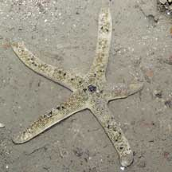
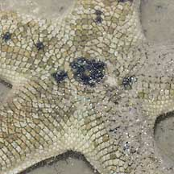
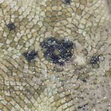
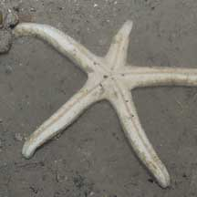
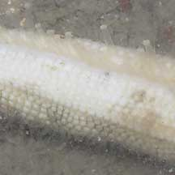

|
|
| sea stars text index | photo index |
| Phylum Echinodermata > Class Stelleroida > Subclass Asteroidea |
| Pale
scaly sea stars Nepanthia maculata Family Asterinidae updated Jul 2020 Where seen? So far, seen only once, on Beting Bronok. According to Lane, this sea star is rather rare in Singapore. It was only first recorded for Singapore in 1991. According to Marsh and Fromont, it is found on muddy to coarse sand with rubble or coral in sheltered waters in Australia. Features: Diameter with arms about 11cm. A rounded star (not flat) with long plump arms like half a cylinder with a flat base and rounded tips. The upper side is covered with 'scales'. When submerged tiny transparent finger-like structures (papulae) might be seen on the upperside. Its underside is plain. On the underside, in grooves along the arms, are long tube feet tipped with suckers. May be mistaken for the Red scaly sea star. The Red scaly sea star is smaller with reddish markings on the underside, and is more commonly encountered. |
 Beting Bronok, Aug 05 |
 Scales on the upperside. |
 Tiny tube feet emerge among the scales. |
|
 Pale underside. |
 Long tube feet from the grooves on the underside. |
Tiny tube feet emerge among the scales. |
| Pale scaly sea stars on Singapore shores |
On wildsingapore
flickr
|
References
|